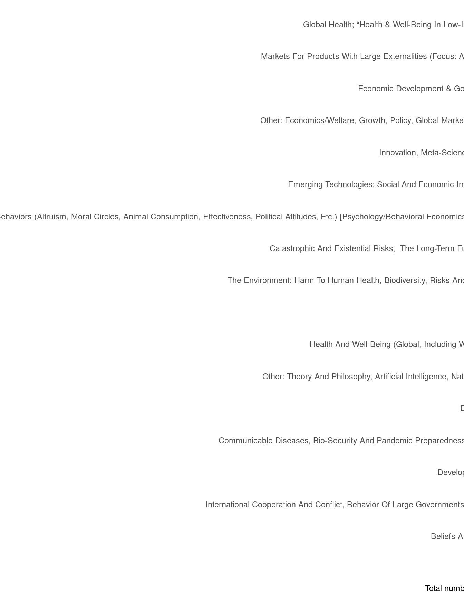
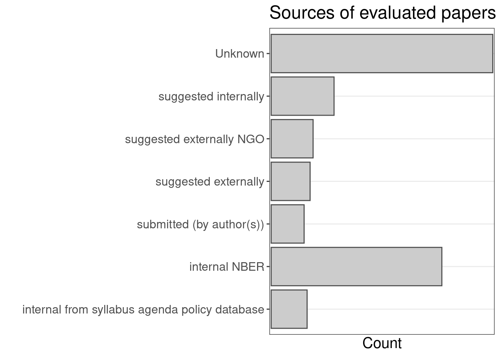

1 Descriptive data on our evaluations
1.1 About our papers
This section shows the papers and/or projects we have evaluated so far.
Evaluation metrics
The next table lists our quantitative metrics (“ratings”) for each evaluation of each paper.
Initial pool of papers: categories
Next, we present a plot of categories for all papers in the Unjournal’s initial pool. One paper can belong to more than one category.

Paper selection
The Sankey diagram below starts with the papers we prioritized for likely Unjournal evaluation.
Paper source
The bar plot below shows how papers came to be evaluated by us.
